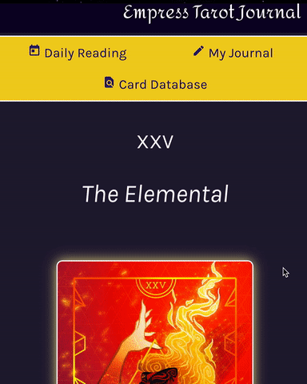

React, Jest, Heroku, Express
This application was built by myself along with two other FrontEnd Students in Mod3 at Turing School of Software and Design, and was designed to facilitate creativity and the challenge of learning a new technology.
This app delivers a portable tarot journal where the user can easily do readings and log their own thoughts over time.
